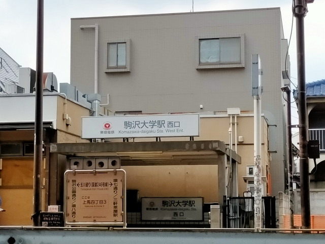
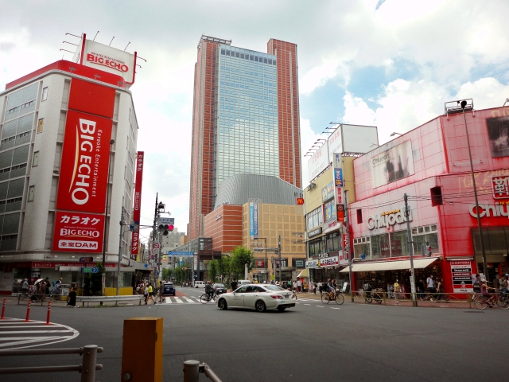

LOCATION
周辺環境

駒沢大学駅（徒歩2分）
都心の利便性と落ち着いた暮らしが叶う快適なロケーション。
現地は駒沢大学駅からすぐ近くにあり、周辺には飲食店やスーパーマーケットが多数点在し、医療施設などの生活に必要な施設も揃っています。さらに、駅前では再開発が進んでおり、より便利なエリアへと進化を続けています。三軒茶屋駅まで徒歩22分、渋谷駅へは自転車で約20分とアクセスも良好な立地です。
一方で、都市の主要エリアからはほどよく距離があり、都心にいながらも落ち着いた暮らしを楽しむことができます。
また、近くには駒沢オリンピック公園があり、自然を身近に感じながら、潤いのある生活を満喫できます。休日には散歩をしながら、気分転換をするのもおすすめです。
-

駒沢大学（徒歩9分）
※写真はイメージです。 -
駒沢オリンピック公園（徒歩8分）
-
カフェ・ベローチェ 駒沢店（現地1F）
※写真はイメージです -

マルエツ 真中店（徒歩4分）
※写真はイメージです。 -
ユニクロ 駒沢自由通り店（徒歩4分）
※写真はイメージです。 -

三軒茶屋駅（徒歩22分）
-
キャロットタワー（徒歩23分）
LIFE INFORMATION
-
-
ショッピング施設
- マルエツ 真中店
- 4分
- 西友駒沢店
- 7分
- オオゼキ野沢店
- 8分
- まいばすけっと 野沢２丁目
- 10分
- まいばすけっと 駒沢４丁目店
- 11分
- まいばすけっと弦巻1丁目店
- 15分
- ピーコックストア桜新町店
- 20分
- サミットストア松陰神社前店
- 20分
- ココカラファイン 駒沢店
- 6分
- セブン-イレブン 世田谷駒沢大学駅西店
- 1分
- ユニクロ 駒沢自由通り店
- 4分
-
教育施設
- 駒沢プチ・クレイシュ 保育所
- 5分
- 上馬つきの木保育園
- 7分
- KBCほいくえん駒沢
- 7分
- オリービア保育園
- 7分
- 駒沢保育園
- 9分
- コドモの園幼稚園
- 6分
- 愛隣幼稚園
- 16分
- 世田谷区立駒沢小学校
- 3分
- 世田谷区立駒沢中学校
- 8分
-
-
-
医療機関
- 駒沢大塚クリニック
- 2分
- あいわクリニック
- 2分
- 駒沢・風の診療所
- 3分
- 駒沢診療所
- 4分
- 西澤内科クリニック
- 5分
- 駒沢ヒロタクリニック
- 5分
- 駒沢病院
- 3分
- 国立病院機構東京医療センター
- 16分
-
その他
- 駒沢オリンピック公園
- 8分
- 世田谷警察署 上馬交番
- 6分
- 世田谷区立中央図書館
- 26分
- 世田谷区役所
- 25分
-